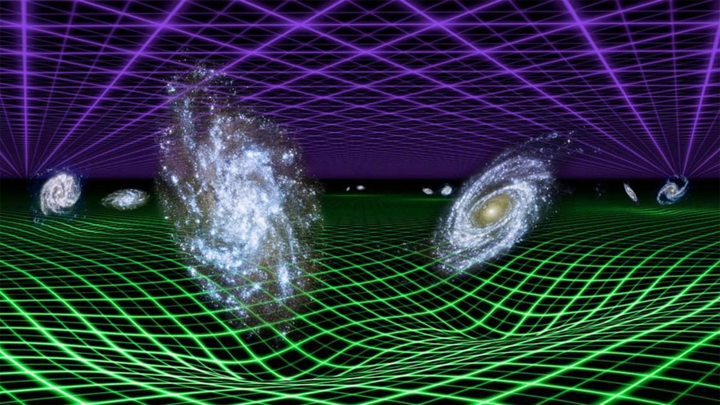
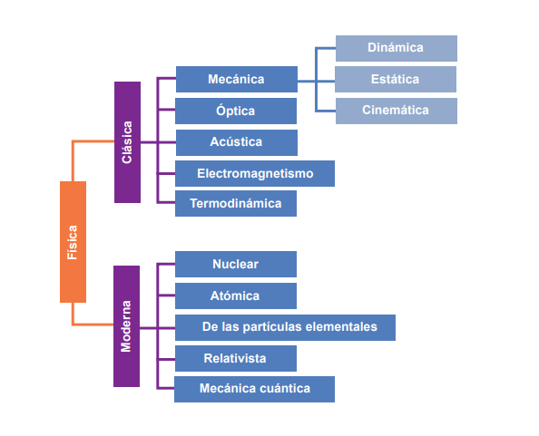
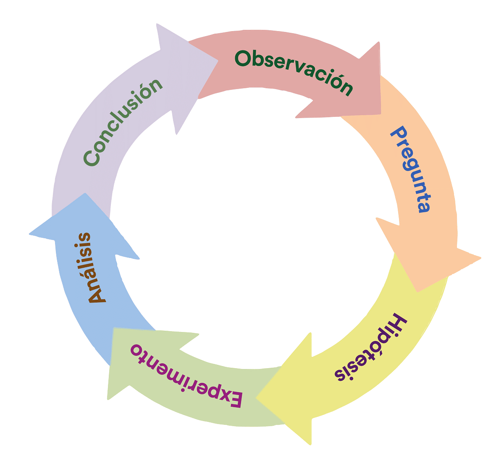
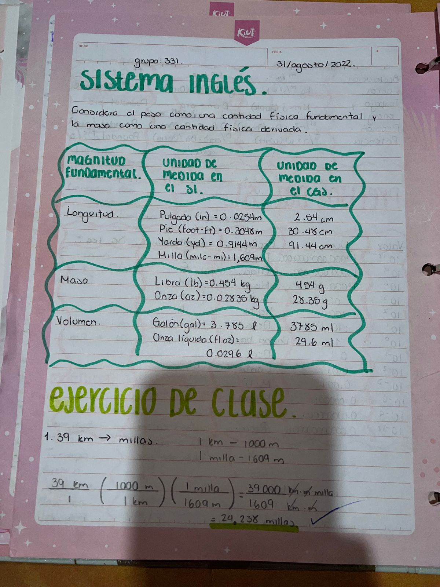
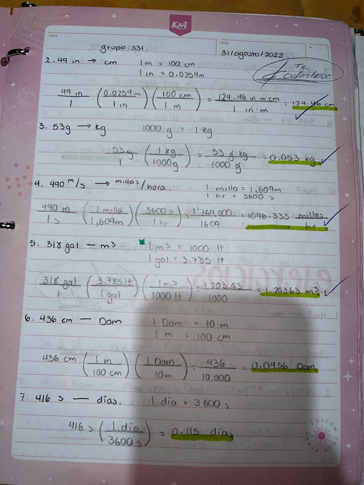

Temario
Ramas de la fisica clasica
Las ramas de la física clásica abarcan diferentes áreas de estudio dentro de la física que se desarrollaron antes de la aparición de la física cuántica. Algunas de las principales ramas de la física clásica son:
- Mecánica: Es la rama de la física que estudia el movimiento de los objetos y las fuerzas que los causan. La mecánica clásica incluye la mecánica newtoniana, que se basa en las leyes del movimiento de Newton..
- Termodinámica: Se encarga del estudio de las leyes que rigen el calor, la temperatura y las transformaciones de la energía térmica. La termodinámica clásica se aplica a sistemas macroscópicos y describe fenómenos como la transferencia de calor y los ciclos de trabajo de los motores..
- Electromagnetismo: Esta rama estudia las interacciones entre la electricidad y el magnetismo, incluyendo los fenómenos de las cargas eléctricas, los campos magnéticos y las ondas electromagnéticas. La teoría electromagnética clásica se basa en las ecuaciones de Maxwell.
- Óptica: Se dedica al estudio de la luz y su comportamiento. La óptica clásica abarca fenómenos como la reflexión, refracción, difracción e interferencia de la luz, y se basa en la propagación de ondas electromagnéticas.
- Acústica: Es la rama que estudia el sonido y sus características, como la propagación, la intensidad y la resonancia. La acústica clásica se basa en el modelo de ondas sonoras.
Estas ramas de la física clásica sentaron las bases para el desarrollo de la física moderna y siguen siendo fundamentales en muchos aspectos de la investigación científica y la aplicación tecnológica en la actualidad.
Ramas de la fisica moderna
La física moderna se basa en dos pilares fundamentales: la física cuántica y la teoría de la relatividad. La física cuántica, desarrollada a principios del siglo XX, describe el comportamiento de las partículas subatómicas y las extrañas propiedades que exhiben, como la superposición y la entrelazación. Por otro lado, la teoría de la relatividad, propuesta por Albert Einstein, revolucionó nuestra comprensión del espacio, el tiempo y la gravedad.
Estas teorías han dado lugar a una variedad de ramas especializadas en la física moderna, como la física de partículas, la cosmología, la astrofísica y la física de la materia condensada. Estas ramas exploran fenómenos cósmicos, desde la estructura del universo hasta las propiedades de la materia en condiciones extremas, y proporcionan las bases teóricas para muchas de las tecnologías avanzadas que utilizamos en la actualidad.
- Física cuántica: Es la rama que estudia los fenómenos a nivel subatómico. Se basa en el principio de la dualidad onda-partícula, donde las partículas pueden comportarse tanto como ondas como partículas discretas. La física cuántica describe fenómenos como la superposición, la entrelazación y el efecto túnel.
- Física de partículas: Se enfoca en el estudio de las partículas fundamentales que componen el universo, como los quarks, leptones y bosones. La física de partículas también se ocupa de las interacciones fundamentales, como las fuerzas electromagnéticas, nucleares fuertes y nucleares débiles.
- Cosmología: Es la rama que estudia el origen, la evolución y la estructura del universo en su conjunto. La cosmología moderna se basa en la teoría de la relatividad y la física de partículas para comprender la formación de galaxias, la expansión del universo y los fenómenos cósmicos.
- Física de la materia condensada: Se dedica al estudio de las propiedades físicas de la materia en estados condensados, como sólidos y líquidos. Esta rama de la física se ocupa de fenómenos como la superconductividad, la magnetización y las transiciones de fase.
- Astrofísica: Combina la física y la astronomía para investigar los objetos celestes y los fenómenos que ocurren en el espacio. La astrofísica moderna utiliza herramientas y conceptos de la física cuántica y la teoría de la relatividad para estudiar estrellas, galaxias, agujeros negros y otros objetos cósmicos.
Estas ramas de la física moderna han revolucionado nuestra comprensión del universo y han dado lugar a avances tecnológicos significativos en campos como la electrónica, la computación cuántica y la energía nuclear.
El Metodo Cientifico
El método científico es una herramienta fundamental utilizada en la investigación y el descubrimiento científico. Es un enfoque sistemático y estructurado que permite a los científicos formular y responder preguntas, probar hipótesis y llegar a conclusiones basadas en evidencia empírica. Aunque puede haber variaciones en su aplicación, el método científico generalmente sigue los siguientes pasos:
- Observación: El proceso comienza con la observación cuidadosa y detallada de un fenómeno o problema en particular. La observación debe ser objetiva y libre de prejuicios para identificar patrones o relaciones.
- Planteamiento de la pregunta: A partir de la observación, se formula una pregunta clara y específica sobre el fenómeno o problema que se desea investigar. La pregunta debe ser lo suficientemente precisa como para guiar la investigación.
- Formulación de hipótesis: Una hipótesis es una explicación tentativa que se propone como respuesta a la pregunta formulada. Se basa en conocimientos previos y puede ser refutada o respaldada por evidencia empírica.
- Diseño y realización de experimentos: Los científicos diseñan experimentos o investigaciones para probar la hipótesis de manera objetiva. Esto implica definir variables, establecer grupos de control y experimentales, recopilar datos y realizar mediciones precisas.
- Análisis de datos: Los datos recolectados durante el experimento se analizan estadísticamente y se interpretan para determinar si respaldan o refutan la hipótesis planteada. Se utilizan métodos estadísticos para evaluar la significancia de los resultados y reducir el sesgo.
- Conclusiones y comunicación: Con base en el análisis de datos, se llega a conclusiones y se evalúa si la hipótesis es respaldada o refutada. Los resultados y conclusiones se comunican a la comunidad científica a través de informes, publicaciones y presentaciones..
- Replicación y revisión: Para asegurar la validez y confiabilidad de los resultados, otros científicos deben ser capaces de replicar el experimento y obtener resultados similares. Además, la comunidad científica revisa y evalúa críticamente los estudios para verificar su coherencia y contribuir al avance del conocimiento.
El método científico es un proceso iterativo y continuo, en el que los resultados de una investigación pueden generar nuevas preguntas e hipótesis, y así sucesivamente. Su aplicación rigurosa ayuda a garantizar que las conclusiones científicas estén basadas en evidencia sólida y que el conocimiento científico avance de manera confiable.
Prefijos del SI

Los prefijos del SI se utilizan para representar múltiplos o submúltiplos de las unidades básicas del sistema, lo que facilita expresar cantidades muy grandes o muy pequeñas de manera más conveniente.
-

Estos prefijos se pueden utilizar con diversas unidades del SI, como metros (m), kilogramos (kg), segundos (s) y amperios (A), entre otros. Al aplicar un prefijo a una unidad, se multiplicará o dividirá la cantidad por el factor correspondiente.
Conversion de unidades
La conversión de unidades es un proceso mediante el cual se transforma una cantidad expresada en una unidad de medida a otra unidad equivalente. Esto es útil cuando necesitas expresar una cantidad en una unidad diferente, o cuando deseas comparar magnitudes que se encuentran en unidades distintas.
Existen muchas unidades de medida utilizadas en diferentes sistemas, como el Sistema Internacional de Unidades (SI), el sistema métrico, el sistema imperial, entre otros. Cada sistema tiene sus propias unidades y factores de conversión
- Factores de conversión: Los factores de conversión son relaciones matemáticas entre las unidades que se utilizan para realizar la conversión. Estos factores se basan en las equivalencias establecidas entre las unidades y se utilizan para multiplicar o dividir la cantidad original.
- Dimensiones y unidades coherentes: Al realizar una conversión, es esencial mantener las dimensiones y unidades coherentes. Esto significa que las dimensiones físicas de la cantidad deben ser las mismas antes y después de la conversión. Por ejemplo, si estás convirtiendo una longitud, asegúrate de que la longitud final tenga las mismas dimensiones que la inicial.
Es importante consultar tablas de conversión o utilizar calculadoras o herramientas en línea confiables para obtener factores de conversión precisos. Además, recuerda tener en cuenta las reglas de redondeo y la cantidad de cifras significativas apropiadas según el contexto. Si tienes una conversión de unidades específica en mente, por favor proporciona los detalles y estaré encantado de ayudarte a realizarla.